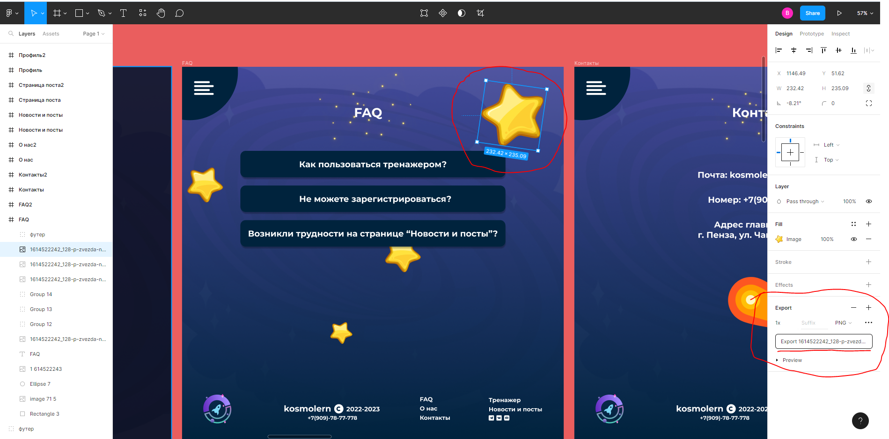

Если вы делали свой макет в Figme то это достаточно просто сделать. Для этого вам понадобится открыть свой макет в Figme выбрать нужный элемент и в правой панели параметров элемента найти кнопку экспорта.

Так же следует правильно назвать свое изображение уточню что правильно называть свои изображение надо так (basket.png | personal.png | logo.png)